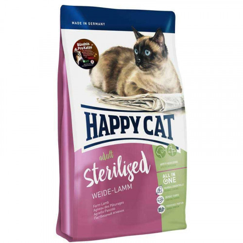

Сухой корм Happy Cat Adult Sterilised Weide Lamm для стерилизованных кошек с ягненком
Корм для стерилизованных кошек с ягненком
Перейти к полному описанию| Животное |
|
| Свойства |
|
| Состав |
|
Корм Happy Cat Adult Sterilised Weide-Lamm разработан специально для кастрированных котов и стерилизованных кошек. Этот сытный и вкусный корм, богатый балластными веществами, содержит всего 10,5% жира и большое количество ценного белка животного происхождения из легко усваиваемого мяса ягненка и вкусного мяса птицы.